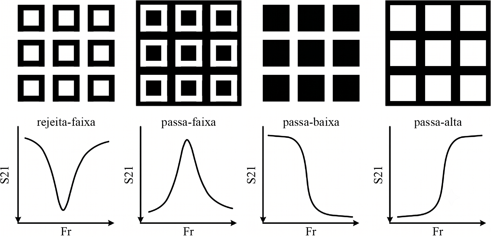

Explicação para Leigos — O que é FSS?
Entenda como as Superfícies Seletivas de Frequência funcionam sem precisar ser engenheiro eletromagnético.
O que é uma FSS?
Uma "Peneira" para Ondas de Rádio
Imagine uma peneira de cozinha. Quando você coloca partículas de diferentes tamanhos, as grandes ficam retidas e as pequenas passam. Uma FSS (Superfície Seletiva de Frequência) funciona de modo similar, mas com ondas de rádio: em certas frequências, as ondas são bloqueadas; em outras, elas passam livremente.

Analogia do Sino
Pense em um sino que ressoa. Quando você o golpeia, ele vibra em uma frequência específica — um tom musical único. Uma FSS é similar: cada geometria metálica "ressoa" em uma frequência específica, e quando o sinal atinge essa frequência, a FSS o bloqueia fortemente.
Onde Isso é Usado?
Antenas Inteligentes
Filtram interferências e deixam passar apenas a frequência desejada.
Escudos Eletromagnéticos
Protegem equipamentos de radiação eletromagnética indesejada.
Painéis Inteligentes
Deixam passar luz visível mas bloqueiam infravermelho (calor).
Tecnologia 5G
Otimizam transmissão e recepção em frequências milimétricas muito altas.
Filtros Ópticos
Separam cores específicas em sistemas de comunicação óptica.
Blindagem de Ambientes
Protegem laboratórios e áreas sensíveis de interferências externas.
As Geometrias FSS no Simulador
O FSS Explorer oferece 6 geometrias diferentes. Cada uma tem características únicas:
Cruz de Jerusalém
Padrão em forma de cruz repetido em grade. Geometria multirressonante (múltiplos picos de bloqueio).
- Ideal para filtros complexos e defesa eletromagnética
- Controlada por 5 parâmetros físicos
Espira Quadrada
Anel quadrado de fio metálico repetido em grade — como um fio dobrado em quadrado oco.
- Resposta de banda larga com acoplamento capacitivo
- Muito usado em antenas ressonantes
Patch Quadrado
Pequeno quadrado sólido de metal repetido em grade. Modelo mais simples.
- Filtro passa-baixa, fácil de fabricar
Anel Circular
Anel circular de fio metálico repetido em grade. Simetria isotrópica.
- Filtro rejeita-banda com simetria circular
Estrela de 4 Pontas
Topologia tapered star com quadrado central e pontas afiladas. Operação em frequências mm-wave.
- Alta capacitância de borda, frequências muito altas (ex: 28 GHz)
Quase Quadrado
Loop quasi-square com gaps centrais. Excelente calibração capacitiva para 5G.
- Análise de banda larga para redes 5G (faixa n78)
Como o Simulador Funciona?
Fluxo de trabalho passo a passo
- Você define os parâmetros — período, tamanho do padrão, material, usando os sliders.
- A geometria é desenhada em tempo real, mostrando como ficaria fisicamente.
- Cálculos matemáticos simulam como ondas se comportam naquela estrutura.
- Um gráfico mostra o resultado — em quais frequências o sinal é bloqueado.
- Você pode exportar os dados em arquivo CSV para análise posterior.
Entendendo os Parâmetros
Frequência (fStart / fEnd)
Define o intervalo de frequências a simular, em GHz. É como varrer um rádio de um lado para o outro — começamos em fStart e vamos até fEnd, observando o que acontece em cada ponto.
Geometria — Dimensões Físicas
Define as medidas físicas da estrutura em milímetros (mm):
- p (período): tamanho da célula que se repete
- d/r (diâmetro/raio): tamanho do padrão metálico
- w (wire/largura): espessura do fio ou padrão
- g (gap): espaço entre elementos
Substrato (Substrate)
Material dielétrico onde a FSS é impressa (como PCB de rádio).
| Parâmetro | Significado |
|---|---|
| εᵣ (er) | Constante dielétrica relativa |
| h_sub | Altura do substrato em mm |
| Presets | RO3003, RO3006 e RT6010 são materiais reais prontos para usar. O RT6010 possui altíssima permissividade (εᵣ = 10.20). |
Entendendo o Gráfico S21
O gráfico "S21 vs Frequência"
Mostra quanto sinal passa em cada frequência: